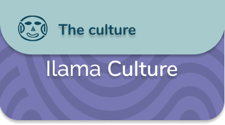

Very little is known about the social, political and economic organization of the societies that lived
in the Calima region during the Ilama period. It is not clear, for example, whether they used goldsmithery.
However, their artistic representations suggest the existence of social relations of gender, power, and
hierarchy.
The Ilama period marks the beginning of the use of pottery in the Calima region. For these societies,
the production of ceramic pieces was a way of materially expressing the world around them, that is to
say, the main aspects that characterized their daily life. A great variety of human and animal forms as
well as passages from everyday life such as maternity or body decoration were represented in ceramic vessels
of great aesthetic quality.
Felines, armadillos, owls, and pigeons were animals of the Calima region that the potters captured in realistic
representations. Other fabulous beings, probably mythical, combine traits of human, feline, amphibian, bat and
snake, perhaps with the intention of making own the strength, audacity, ferocity, and agility of these animals.